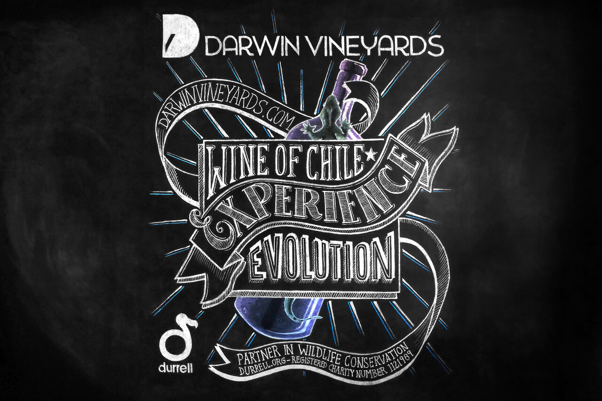
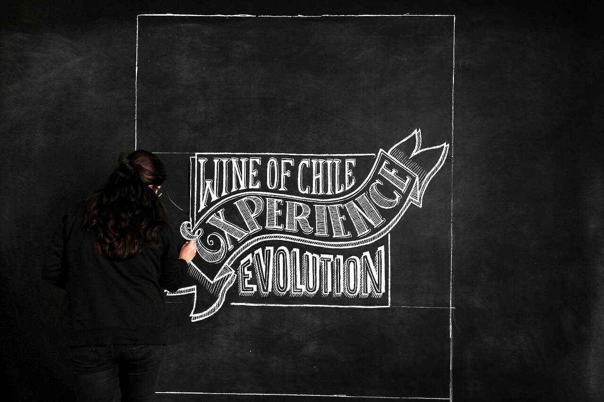
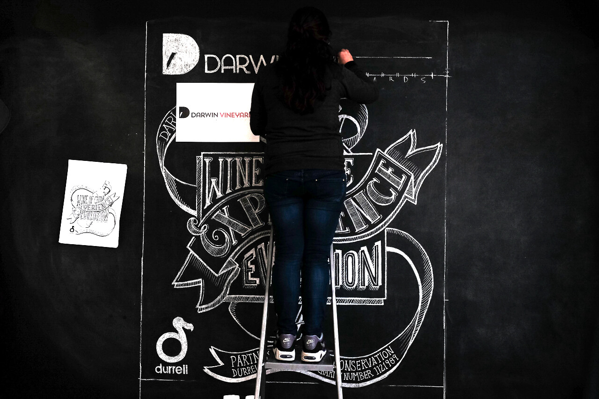
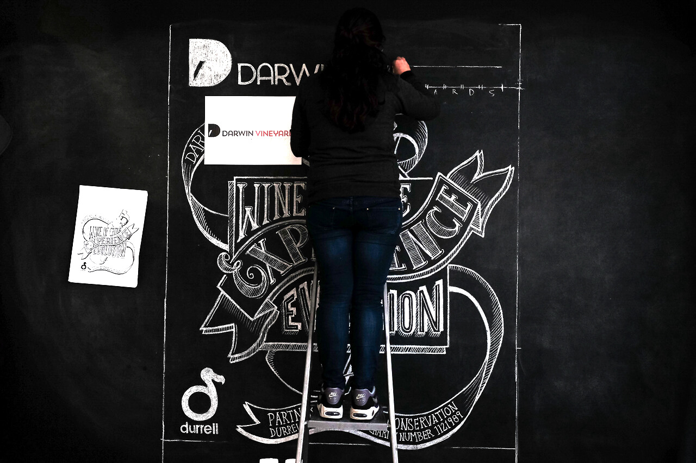
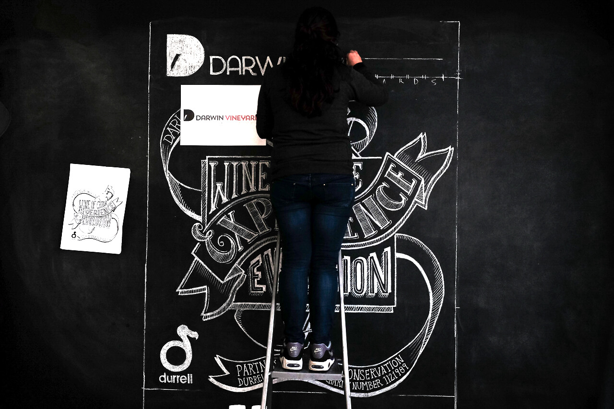

Prowein 2017 Poster
2016 /Illustration
Darwin Vineyards poster for Prowein Düsseldorf 2017. All drawn on a chalk wall
and then photographed.
You can watch the 'making of' video below.


 


go back
back to top